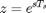
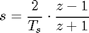
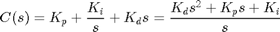
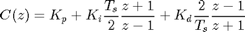
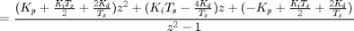

Extras: PID Compensator with Bilinear Approximation
Contents
Bilinear transformation
There are several ways for mapping from the s-plane to z-plane. The exact conversion between the Laplace and z-domains is the following where Ts is the sampling time.
(1)
This conversion, however, involves a trancendental function and the resulting transfer function cannot be represented as a ratio of polynomials. This makes it difficult to implement such a control algorithm on a digital computer. Therefore, we will use an approximate conversion. In particular, we are going to use the bilinear transformation shown below.
(2)
This transformation maps the entire left half of the s-plane into the unit circle in the z-plane. This transformation also corresponds to a trapezoidal approximation of integration.
PID compensator with bilinear transformation
In the continuous-time system, a transfer function for a PID controller is described as follows
(3)
where Kp, Ki and Kd are the proportional, integral, and derivative gains respectively. To map to the z-plane we substitute the bilinear relation from above into the above PID transfer function, such that the discrete-time PID controller becomes the following.
(4)
(5)
Inspection of the above shows that the discretization process generated a controller with poles on the unit circle indicating a controller that is marginally stable which can cause problems. See the DC Motor Speed: Digital Control page for an example where the discretization of the PID controller led to an unstable closed-loop digital control system. In that example extra terms were added to the controller to stabilize the system. Alternatively, a different discretization process can be employed.
You can add the following MATLAB commands into an m-file in order to generate a discrete-time PID controller with gains, Kp, Ki, and Kd, based on the bilinear transformation.
% Discrete PID Controller
% Ts = sampling time
num = [Kp+(Ki*Ts/2)+((2*Kd)/Ts)
(Ki*Ts)-(4*(Kd/Ts))
-Kp+(Ki*Ts/2)+((2*Kd)/Ts)]';
den = [1 0 -1];
C = tf(num,den,Ts);
In addition, the c2d command in MATLAB can convert a continuous-time PID controller to discrete-time without going through an algebraic substitution or mapping. This command requires a system representation of the continuous system, the sampling time, and the method that will be used. For this case, the 'tustin' method corresponds to the bilinear transformation. For example, the c2d command can be used as follows.
% Discrete PID Controller using c2d command
% Ts = sampling time
pid_c = tf([Kd Kp Ki],[1 0]);
C = c2d(pid_c,Ts,'tustin');
Alternatively, the pid command can be employed within MATLAB to discretize a continuous-time PID controller (as was done with the c2d command) or to create a discrete-time PID controller directly. With the pid command, the methodology employed for discretizing the integral term and the derivative term can be specified independently. Specifying an integration method of 'Trapezoidal' corresponds to the bilinear transformation. Alternatively, an integration method of 'BackwardEuler' or 'ForwardEuler' can be specified (ForwardEuler is the default). Note, the pid command will not allow you to employ a trapezoidal integration method for the derivative term (unless the first-order derivative filter is included) due to the stability issues alluded to above. The following gives example code for defining a digital controller directly with the pid command.
% Discrete PID Controller using pid command
% Ts = sampling time
C = pid(Kp,Ki,Kd,'Ts',Ts,'IFormula','Trapezoidal','DFormula','ForwardEuler')